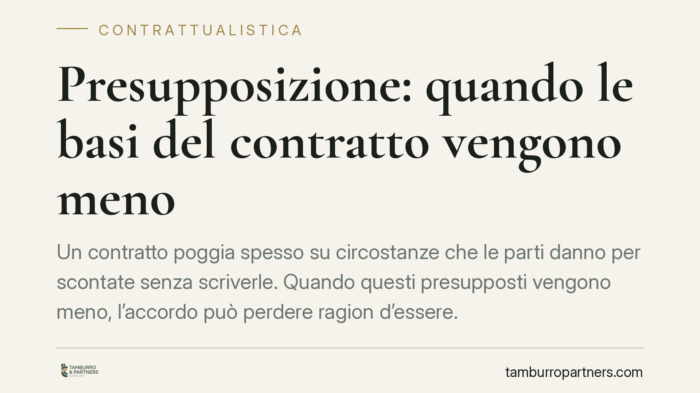

Presupposizione: quando le basi del contratto vengono meno
Un contratto poggia spesso su circostanze che le parti danno per scontate senza scriverle. Quando questi presupposti vengono meno, l'accordo può perdere ragion d'essere. La presupposizione è l'istituto che disciplina proprio queste situazioni: la Cassazione ne ha definito i contorni, con conseguenze pratiche rilevanti per chi contratta.

Di cosa parliamo
La presupposizione è una situazione di fatto o di diritto che le parti considerano un presupposto comune e certo del contratto, pur senza averla espressamente prevista. È il classico caso della condizione "non detta ma sottintesa": entrambi i contraenti hanno concluso l'accordo perché davano per acquisita una determinata circostanza.
L'esempio tradizionale è la locazione di un balcone stipulata per assistere a una parata che poi viene annullata. Nessuno lo aveva scritto, ma è evidente che quel contratto aveva senso solo in vista dell'evento. Se l'evento salta, viene meno la ragione stessa dell'accordo.
Inquadramento normativo
La presupposizione non è disciplinata da una norma specifica del Codice civile. È un istituto di elaborazione giurisprudenziale, costruito dalla Corte di Cassazione a partire dai principi generali in materia di contratto: la causa (art. 1325 c.c.), la buona fede nell'esecuzione (art. 1375 c.c.) e l'interpretazione secondo comune intenzione delle parti (art. 1362 c.c.).
Secondo l'orientamento consolidato della Suprema Corte, la presupposizione ricorre quando una determinata situazione, passata, presente o futura, di carattere obiettivo, sia stata assunta dalle parti come presupposto comune e determinante del contratto, indipendentemente dalla loro volontà, e la cui esistenza o venir meno prescinda dall'attività dei contraenti.
I requisiti individuati dalla Cassazione sono precisi:
- il presupposto deve essere comune a entrambe le parti, non un mero motivo individuale di uno solo;
- deve avere natura obiettiva, cioè non dipendere dalla volontà o dal comportamento dei contraenti;
- deve essere stato determinante per il consenso;
- il suo venir meno non deve essere stato assunto come rischio da una delle parti.
Cosa accade se il presupposto viene meno
Qui sta il punto delicato. La giurisprudenza non offre una risposta unica. Quando il presupposto comune cade, gli effetti possono variare a seconda del momento e della natura della circostanza.
Se il presupposto mancava già al momento della stipula, il contratto può risultare privo di una base essenziale, con possibili riflessi sulla sua validità o efficacia. Se invece il presupposto viene meno successivamente, la soluzione più frequentemente accolta è quella della risoluzione o del venir meno del vincolo, perché l'esecuzione perderebbe la sua funzione economico-sociale.
La distinzione rispetto ad altri istituti va tenuta ferma. La presupposizione non coincide con l'errore, che riguarda un vizio della volontà di una sola parte. Non coincide con la condizione, che è espressamente pattuita. Non coincide con l'impossibilità sopravvenuta della prestazione, perché qui la prestazione resta materialmente eseguibile: è la sua utilità a essere svanita.
Implicazioni pratiche
Per chi conclude contratti, l'insegnamento è netto: ciò che si dà per scontato è spesso la parte più fragile dell'accordo. Un presupposto "ovvio" ma non scritto può diventare terreno di contenzioso quando le circostanze cambiano.
La presupposizione è uno strumento di tutela, ma non è automatico. Chi la invoca deve dimostrare che quella circostanza era davvero comune, obiettiva e determinante per entrambi. Un semplice motivo personale, magari nemmeno comunicato alla controparte, non basta.
Per chi redige contratti, il rischio è opposto: affidarsi all'implicito espone a incertezza. Rendere esplicite le condizioni fondamentali dell'accordo riduce lo spazio per interpretazioni divergenti e per liti future.
Cosa fare in concreto
- Esplicitate i presupposti essenziali dell'accordo: se una determinata circostanza è la ragione per cui contrattate, scrivetela nel testo o nelle premesse.
- Inserite clausole di condizione o risoluzione collegate agli eventi che considerate decisivi, così da governare in anticipo le conseguenze del loro venir meno.
- Chiarite la ripartizione del rischio: indicate quale parte sopporta gli effetti di eventi esterni, per evitare che la questione resti aperta.
- Conservate le comunicazioni che mostrano quali circostanze erano note e condivise da entrambi: sono prova utile se sorge contenzioso.
- Valutate una revisione dell'accordo quando le condizioni di fatto mutano, prima di considerarlo automaticamente caducato.
La presupposizione resta un rimedio prezioso ma dai contorni sfumati. Consigliamo di non affidarvi all'implicito quando è in gioco la ragione stessa del contratto: la certezza si costruisce nel testo, non nell'interpretazione successiva.
Ogni contratto ha il suo equilibrio.
Se vuoi una revisione delle clausole o una redazione su misura, scrivi allo studio. Ti rispondiamo entro un giorno lavorativo.